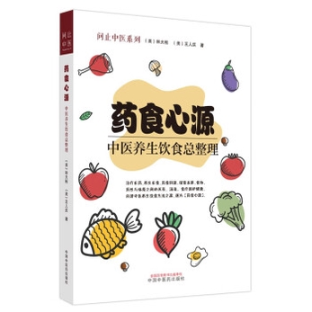

藥食心源---中醫養生飲食總整理

俗話說,“民以食為天”,食物對人體健康的作用無須多言,而藥物在一 般人看來,只是用於治病的苦澀之物,非不得已不會服用。 其實,在中 藥裡面,有很多藥食同源的藥材,有病治病,無病強身,對人民群眾防 病治病、養生保健有極大作用。 這些藥材都是經過無數先民長期實踐檢 驗,效果明確,無毒無害,再與一些食物組合,就形成了各式各樣精美 藥膳,對人體健康有極大價值。 本書正是從歷史源流、專業角度入手, 向大家展示這些經典藥膳,彩色印刷,圖文並茂,是一本不可多得的家 庭養生保健食療用書。
|